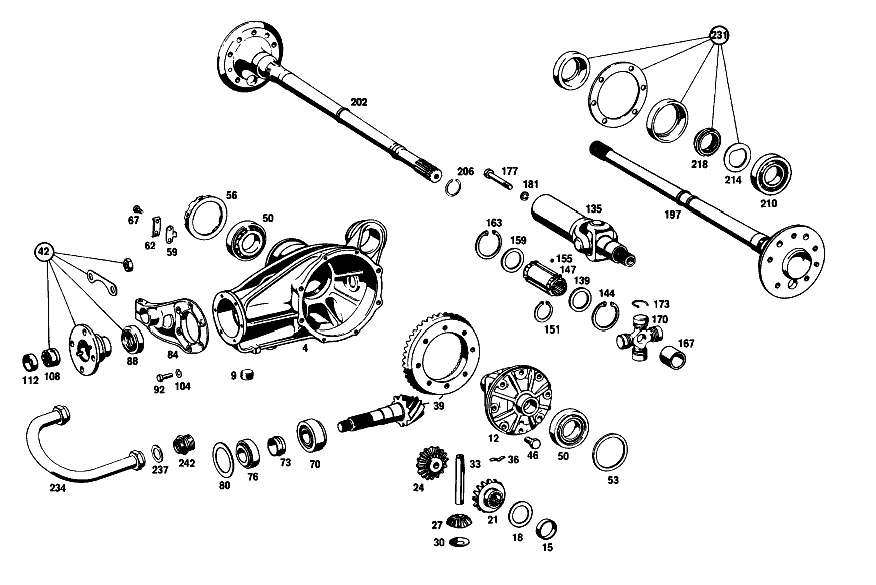

| № | Артикул | Название | Кол. | Примечание | Ограничение |
|---|---|---|---|---|---|
| 4 | A 108 350 00 20 | КАРТЕР МОСТА | 1 | ||
| 9 | A 186 997 00 32 | - ЗАГЛУШКА РЕЗЬБОВАЯ | 2 | M24X1,5 | |
| 12 | A 108 350 02 23 | ДИФФЕРЕНЦИАЛ | 1 | ||
| 15 | A 108 353 00 48 | - Втулка подшипника | 1 | ||
| 18 | A 184 353 00 62 | - Упорная шайба | 2 | 1.3 MM AS REQUIRED [402] БОЛЬШЕ НЕ ПОСТАВЛЯЕТСЯ | |
| 21 | A 108 353 01 15 | - ШЕСТЕРНЯ ПОЛУОСИ | - | ||
| 21 | A 108 350 01 40 | - Шестерня полуоси | 1 | СЛЕВА | |
| 24 | A 108 350 01 40 | - Шестерня полуоси | 1 | СПРАВА | |
| 27 | A 116 353 02 14 | - ВЕДУЩ.КОН.ШЕСТЕРНЯ | - | ||
| 27 | A 140 353 05 14 | - Сателлит дифференциала | 2 | ||
| 30 | A 112 353 01 24 | - Сферическая шайба | 2 | ||
| 33 | A 108 353 00 21 | - Палец | 1 | ||
| 36 | A 112 993 00 30 | - ПРУЖИНА | 1 | ||
| 39 | A 108 350 00 39 | РЯД ШЕСТЕРЕН | 1 | 1:4.08 [001] PRIOR TO ORDERING, ASCERTAIN RATIO ON VEHICLE | |
| 42 | A 108 586 01 35 | ремкомплект | 1 | ||
| 46 | A 128 990 00 01 | болт | 10 | ||
| 50 | A 000 980 19 02 | Кон. роликоподшипник | 2 | ||
| 53 | A 112 353 08 52 | Компенсационная шайба | 1 | 1.8 MM AS REQUIRED | |
| 56 | A 112 353 01 25 | Резьбовое кольцо | 1 | ||
| 59 | A 180 353 01 73 | ПРЕДОХРАНИТЕЛЬ | 1 | ||
| 62 | A 180 994 00 30 | Стопорная шайба | 1 | ||
| 67 | N 000933 006103 | Винт | - | ||
| 67 | N 304017 006018 | Винт с 6-гранной головкой | 2 | M6X12 | |
| 70 | A 000 980 10 02 | Конический подшипник | 1 | ||
| 73 | A 108 353 00 42 | Распорная втулка | 1 | ||
| 76 | A 000 980 18 02 | Конический подшипник | 1 | ||
| 80 | A 112 353 14 52 | Компенсационная шайба | 1 | 1.5 MM AS REQUIRED | |
| 84 | A 110 353 03 08 | КРЫШКА | 1 | ||
| 88 | A 005 997 41 46 | УПЛОТНИТ. КОЛЬЦО | 1 | ||
| 92 | N 304017 008023 | Винт с 6-гранной головкой | 6 | M8X20\-10.9 | |
| 104 | N 912004 008102 | Пружинное кольцо | 6 | ||
| 108 | A 111 350 01 66 | Шлицевая гайка | 1 | ||
| 112 | A 111 994 02 44 | - предохранитель | 1 | ||
| 116 | A 108 350 02 19 | ТРУБА НЕСУЩАЯ | 1 | СЛЕВА | |
| 120 | A 108 350 03 19 | ТРУБА НЕСУЩАЯ | 1 | СПРАВА | |
| 124 | A 180 351 01 50 | - втулка | 2 | ||
| 127 | A 115 350 02 90 | Воздушный клапан | 1 | НЕСУЩ. ТРУБА СЛЕВА | |
| 131 | A 108 351 00 68 | КОЛПАЧОК | 1 | [003] 012 FROM CHASSIS 031025; 014 FROM CHASSIS 025411 | |
| 135 | A 112 350 02 13 | ШАРНИР ШАРОВОЙ | 1 | ||
| 139 | A 180 357 01 52 | - Диск | 1 | ||
| 144 | A 000 994 29 41 | - Стопорное кольцо | 1 | ||
| 147 | A 108 350 00 48 | - Скользящая муфта | 1 | ||
| 151 | A 188 994 00 41 | - Стопорное кольцо | 2 | [004] 012 UP TO CHASSIS 008609; 014 UP TO CHASSIS 005932 | |
| 155 | A 180 981 00 86 | - Ролик | 114 | ||
| 159 | A 188 357 00 52 | - Диск | 1 | ||
| 163 | A 094 990 71 05 | - Стопорное кольцо | 1 | ||
| 167 | A 112 357 03 50 | - ВТУЛКА | 1 | ||
| 170 | A 112 350 01 28 | - Карданный шарнир | 1 | с NEEDLE BEARING BUSHINGS AND NEEDLES | |
| 173 | A 186 994 12 35 | - Пруж. стопорное кольцо | 4 | 2.15 MM AS REQUIRED | |
| 177 | N 000912 010053 | БОЛТ | 1 | ||
| 181 | N 000127 010202 | Пружинное кольцо | 1 | ||
| 185 | A 110 357 04 91 | Манжета | 1 | ||
| 189 | A 110 357 03 91 | Манжета | 1 | SPLIT для REPAIRS | |
| 193 | A 002 988 10 78 | Скоба | 9 | SPLIT для REPAIRS | |
| 197 | A 108 350 03 10 | Полуось заднего моста | 1 | СЛЕВА | |
| 202 | A 108 350 07 10 | Полуось заднего моста | 1 | СПРАВА | |
| 206 | A 108 994 00 35 | - СТОПОРН. КОЛЬЦО | 1 | СПРАВА | |
| 210 | A 001 981 15 25 | Шарикоподшипник | - | ||
| 210 | A 002 981 23 01 | ПОДШ. С ЦИЛ. РОЛИКАМИ | 2 | ||
| 214 | A 183 353 03 73 | предохранитель | 2 | ||
| 218 | A 153 357 00 26 | Шлицевая гайка | 2 | ||
| 223 | N 000933 010090 | Винт | 8 | ||
| 227 | A 126 423 00 12 | Тормозной диск | 2 | ||
| 231 | A 111 350 00 68 | Ремк-т полуоси зад. моста | 2 | REAR AXLE SHAFT SEALING | |
| 245 | A 110 351 00 74 | Палец | 1 | ||
| 248 | A 180 351 01 53 | Проставочная втулка | 2 | 26.0 MM AS REQUIRED | |
| 251 | A 180 351 14 52 | Компенсационная шайба | 2 | 2.0 MM AS REQUIRED | |
| 255 | A 180 351 13 52 | Центрирующее кольцо | - | ||
| 255 | A 180 351 14 52 | Компенсационная шайба | 2 | 1.9 MM AS REQUIRED | |
| 259 | A 180 351 03 51 | Проставочное кольцо | 2 | ||
| 263 | A 180 351 09 86 | Резиновое кольцо | 4 | ||
| 267 | A 180 351 00 74 | Клин | 1 | ||
| 271 | N 912004 008102 | Пружинное кольцо | 1 | ||
| 275 | N 000934 008013 | Гайка | 1 | ||
| 279 | A 180 994 03 41 | Стопорное кольцо | 1 | ||
| 283 | N 000443 020000 | Запорная крышка | 1 | ||
| 287 | A 180 997 04 30 | Резьбовая пробка | 1 | ||
| 291 | A 180 994 01 12 | Стопорная шайба | 1 | ||
| 295 | N 071412 006100 | Пресс-масленка | 1 | IN REAR EYE [402] БОЛЬШЕ НЕ ПОСТАВЛЯЕТСЯ | |
| 299 | N 071412 006200 | Пресс-масленка | 1 | IN FRONT EYE | |
| 303 | A 110 350 12 75 | Резиновая опора | 1 | ||
| 307 | A 109 350 00 32 | Кронштейн | 1 | ||
| 311 | N 001473 003001 | - Просечной штифт | 1 | ||
| 315 | N 070614 010018 | Винт | 3 | ||
| 319 | N 000127 010202 | Пружинное кольцо | 3 | ||
| 323 | A 110 350 10 29 | НИЖН. ПРОДОЛЬН. ШТАНГА | 1 | СЛЕВА | |
| 327 | A 110 352 18 65 | Резиновая опора | - | [005] NO LONGER AVAILABLE INDIVIDUALLY, BUT ONLY IN REPAIR KIT | |
| 331 | A 111 352 05 09 | Опорный палец | 2 | ||
| 335 | A 111 352 12 76 | Пружинная шайба | 4 | ||
| 339 | N 009045 032000 | Пруж. стопорное кольцо | 4 | ||
| 343 | A 110 352 01 51 | Проставочное кольцо | 4 | ||
| 347 | A 111 352 01 71 | болт | 4 | ||
| 351 | A 111 352 01 73 | Стопорная шайба | 4 | ||
| 355 | A 110 350 06 75 | Резиновая опора | 1 | С ПРИЖИМ. ДИСКОМ | |
| 359 | A 110 351 00 45 | Пружинная шайба | 1 | СВЕРХУ | |
| 363 | N 000961 016004 | Винт | 1 | ||
| 367 | N 912004 016101 | Пружинное кольцо | 1 | ||
| 371 | N 000933 010016 | Винт | 4 | ||
| 375 | N 000127 010202 | Пружинное кольцо | 4 | ||
| 379 | A 110 350 04 93 | Поперечная распорка | 1 | ||
| 383 | N 000934 014008 | Гайка | 1 | ||
| 387 | A 111 351 03 40 | ДЕРЖАТЕЛЬ | 1 | ||
| 391 | A 111 351 04 48 | Резиновая опора | 2 | ||
| 395 | A 111 351 02 40 | Язычок | 1 | ||
| 399 | N 000933 010106 | Винт | 1 | ||
| 403 | N 000137 010201 | Пружинная шайба | 1 | ||
| 407 | N 000961 012040 | Винт | 1 | ||
| 411 | N 000137 012203 | Пружинная шайба | - | ||
| 411 | A 094 990 42 05 | Пружинная шайба | 1 | ||
| 415 | A 110 351 07 43 | Чашка | 1 | ВНУТР. | |
| 419 | A 111 351 04 44 | Резиновое кольцо | 2 | ||
| 423 | A 110 351 06 43 | Чашка | 1 | СНАРУЖИ | |
| 427 | N 000934 012023 | Гайка | - | ||
| 427 | N 308673 012002 | Шестигранная гайка | 1 | ||
| 431 | N 007967 012000 | Гайка | 1 | ||
| 434 | A 110 352 10 65 | Резиновая опора | 2 | ||
| 438 | A 110 352 00 42 | Крепежная пластина | 2 | ||
| 442 | A 108 990 03 40 | Диск | 2 | MOUNTING PLATE TO BODY FLOOR | |
| 449 | N 912004 008102 | Пружинное кольцо | 6 | MOUNTING PLATE TO BODY FLOOR | |
| 453 | N 000934 008013 | Гайка | 6 | MOUNTING PLATE TO BODY FLOOR | |
| 457 | N 912004 014100 | Пружинное кольцо | 2 | ||
| 462 | N 000934 014019 | Гайка | - | ||
| 462 | N 308673 014001 | Шестигранная гайка | 2 | M14X1.5 | |
| A 108 350 06 00 | ЗАДНИЙ МОСТ | 1 | 1:4.08 [001] PRIOR TO ORDERING, ASCERTAIN RATIO ON VEHICLE | ||
| A 108 350 55 00 | ЗАДНИЙ МОСТ | - | 1:3.92 [007] 016 FROM CHASSIS 080479; 018 FROM CHASSIS 086711 [412] БОЛЬШЕ НЕ ПОСТАВЛЯЕТСЯ, ЗАКАЗЫВАТЬ ОТДЕЛЬНЫЕ ДЕТАЛИ | ||
| A 108 350 00 03 | КАРТЕР МОСТА | 1 | 1:4.08 [001] PRIOR TO ORDERING, ASCERTAIN RATIO ON VEHICLE | ||
| A 111 350 00 03 | КАРТЕР МОСТА | 1 | 1:3.92 [001] PRIOR TO ORDERING, ASCERTAIN RATIO ON VEHICLE | ||
| A 108 353 00 01 | - КОРПУС ДИФФЕРЕНЦИАЛА | - | |||
| A 184 353 01 62 | - Упорная шайба | 2 | 1.4 MM AS REQUIRED | ||
| A 184 353 02 62 | - Упорная шайба | 2 | 1.5 MM AS REQUIRED | ||
| A 184 353 03 62 | - Упорная шайба | 2 | 1.6 MM AS REQUIRED | ||
| A 184 353 04 62 | - Упорная шайба | 2 | 1.7 MM AS REQUIRED | ||
| A 112 353 01 21 | - БОЛТ | - | |||
| A 108 535 00 21 | - SUPERSESSION DUMMY | - | |||
| A 111 350 08 39 | Комплект колес | 1 | 1:3.92 [001] PRIOR TO ORDERING, ASCERTAIN RATIO ON VEHICLE | ||
| A 112 353 09 52 | Компенсационная шайба | 1 | 1.9 MM AS REQUIRED | ||
| A 112 353 10 52 | Компенсационная шайба | 1 | 2.0 MM AS REQUIRED | ||
| A 112 353 11 52 | Компенсационная шайба | 1 | 2.1 MM AS REQUIRED | ||
| A 112 353 12 52 | Торцевое уплотнение | - | |||
| A 112 353 11 52 | Компенсационная шайба | 1 | 2.2 MM AS REQUIRED | ||
| A 180 353 02 73 | ПРЕДОХРАНИТЕЛЬ | 1 | |||
| A 180 353 03 73 | ПРЕДОХРАНИТЕЛЬ | 1 | |||
| A 180 353 05 73 | предохранитель | 1 | |||
| A 180 353 06 73 | ПРЕДОХРАНИТЕЛЬ | 1 | |||
| A 000 980 52 02 | КОНИЧ. РОЛИКОПОДШИПНИК | 1 | |||
| A 000 980 18 02 | Конический подшипник | 1 | |||
| A 112 353 16 52 | РАСПОРНАЯ ШАЙБА | 1 | 1.6 MM AS REQUIRED | ||
| A 112 353 18 52 | РАСПОРНАЯ ШАЙБА | 1 | 1.7 MM AS REQUIRED [402] БОЛЬШЕ НЕ ПОСТАВЛЯЕТСЯ | ||
| A 112 353 20 52 | Компенсационная шайба | 1 | 1.8 MM AS REQUIRED | ||
| A 004 997 56 46 | Уплотнительное кольцо | 1 | |||
| A 110 350 01 45 | Фланец | 1 | |||
| A 110 320 24 43 | - Держатель | 1 | |||
| A 110 320 25 43 | - ДЕРЖАТЕЛЬ | 1 | |||
| A 186 994 04 35 | - СТОПОРН. КОЛЬЦО | 4 | 2.25 MM AS REQUIRED | ||
| A 186 994 15 35 | - СТОПОРН. КОЛЬЦО | 4 | 2.35 MM AS REQUIRED | ||
| A 186 994 17 35 | - СТОПОРН. КОЛЬЦО | 4 | 2.45 MM AS REQUIRED | ||
| A 186 994 19 35 | - СТОПОРН. КОЛЬЦО | 4 | 2.55 MM AS REQUIRED | ||
| A 115 991 05 60 | - Цилиндрический шрифт | 2 | |||
| N 900288 088003 | Хомут | 1 | ТРУБА НЕСУЩАЯ | ||
| N 900288 121000 | Хомут | 1 | КАРТЕР ЗАДНЕГО МОСТА | ||
| A 180 351 18 53 | Проставочная втулка | 2 | 25.8 MM AS REQUIRED | ||
| A 180 351 17 53 | Проставочная втулка | 2 | 25.6 MM AS REQUIRED | ||
| A 180 351 16 53 | Проставочная втулка | 2 | 25.4 MM AS REQUIRED | ||
| A 180 351 15 53 | РАСПОРН. ТРУБКА | - | |||
| A 180 351 16 53 | Проставочная втулка | 2 | 25.2 MM AS REQUIRED | ||
| A 180 351 14 53 | Проставочная втулка | 2 | 25.0 MM AS REQUIRED | ||
| A 180 351 14 52 | Компенсационная шайба | 2 | 2.0 MM AS REQUIRED | ||
| A 180 351 15 52 | Дистанционная шайба | 2 | 2.1 MM AS REQUIRED | ||
| A 180 351 16 52 | Компенсационная шайба | 2 | 2.2 MM AS REQUIRED | ||
| A 180 351 17 52 | Компенсационная шайба | 2 | 2.3 MM AS REQUIRED | ||
| A 180 351 18 52 | Компенсационная шайба | 2 | 2.4 MM AS REQUIRED | ||
| A 180 351 19 52 | Компенсационная шайба | 2 | 2.5 MM AS REQUIRED | ||
| A 180 351 27 52 | Компенсационная шайба | 2 | 2.6 MM AS REQUIRED | ||
| A 180 351 28 52 | Компенсационная шайба | 2 | 2.7 MM AS REQUIRED | ||
| A 180 351 29 52 | Центрирующее кольцо | - | |||
| A 180 351 30 52 | Компенсационная шайба | 2 | 2.8 MM AS REQUIRED | ||
| A 180 351 30 52 | Компенсационная шайба | 2 | 2.9 MM AS REQUIRED | ||
| A 180 351 20 52 | Компенсационная шайба | 2 | 3.0 MM AS REQUIRED | ||
| A 180 351 31 52 | Компенсационная шайба | 2 | 3.1 MM AS REQUIRED | ||
| A 180 351 32 52 | Центрирующее кольцо | - | |||
| A 180 351 31 52 | Компенсационная шайба | 2 | 3.2 MM AS REQUIRED | ||
| A 110 350 12 75 | Резиновая опора | 1 | |||
| A 110 350 11 29 | НИЖН. ПРОДОЛЬН. ШТАНГА | 1 | СПРАВА | ||
| A 110 350 14 75 | Ремк-т реактивной штанги | 1 | НИЖН. ПРОДОЛЬН. ШТАНГА | ||
| A 111 352 03 71 | БОЛТ | 4 | |||
| N 000933 008108 | Винт | 4 | MOUNTING PLATE TO BODY FLOOR | ||
| N 000125 008407 | ШАЙБА | 8 | MOUNTING PLATE TO BODY FLOOR |
Позиций: 187 · подписано на схемах: 123 · колесо — плавный зум в курсор, перетаскивание — пан, двойной клик — зум, клик по артикулу — скопировать.